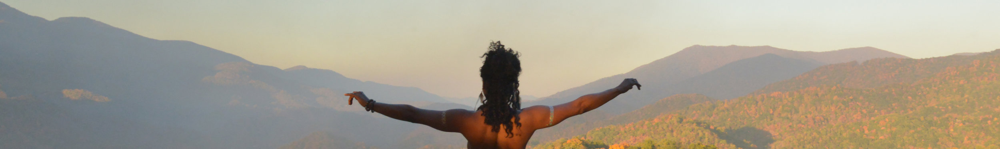

For my family, friends and followers who have come to expect new work from me in November and December - this year's publication will be delayed until probably March or April. I have had a hard drive semi-failure and will not be able to resume stitching work until I've backed up roughly 6Tb of images so that I can address the failure and get my rig in a position to run stitch jobs.
So.... What happened, and why so long to recover? It's a little complicated. Running gigapixel stitch jobs, and editing the resulting large files requires a lot of space. Large scale stitch jobs require 600Gb of temporary file space - and the resulting files can be in the 25-50Gb range which means photoshop likes about 300-400Gb of temporary file space to edit them. I store the original photos as well as the stitched output on a 30Tb Raid-5 thunderbolt drive and work to keep 650Gb of the internal SSD drive free for temporary files. At some point in late October the thunderbolt cable was kinked and file indexes appear to have been courrupted. I am able to recover files and have started backing up to my Amazon Glacier storage, but that will take a while. Once I've gotten everything backed up I will be able to run full recovery (likely re-formatting) the 30Tb external drive and then I can get back to work.
I've already backed up all of the final panoramic works that I've printed to date, and the images that were shot in 2016 and 2015 (1.2Tb). I'm currently half way through 2014 (one of my most prolific years to date) and hope to be completed (back to 2008) by March. This has been a very discouraging time for me, the scare of loosing all the files and the long road back are challenging. The thing that keeps me going is the thought of stitching some of the works that were shot just days before the hard drive failure. My collaboration with Micah is at the top of my to-do list once I get this all sorted.
